Nous y voilà ! Après ce chapitre, nous allons enfin nous concentrer sur ce qui est arrivé à Yuya et Yuri ! Profitons de voir, Judai, Serena, et tous les autres se réunir !
Yugioh: The Power of Four
La plupart des personnes de l'Academie, en particulier
les étudiants d'Obelisk Blue, ont applaudi bruyamment la décision de
Serena.
Cependant, ceux qui la connaissaient vraiment sont restés bouche bée. Ils avaient tous l'impression qu'elle détestait l'Obelisk Blue parce que le dortoir partageait le
même nom que l'Unite des Soldats d'Elite
d'Akaba Leo. Elle-même
avait dit qu'elle ne mettrait jamais les pieds dans cet endroit. Ils se demandaient tous ce qui avait pu la faire changer d'avis.
Alors qu'ils applaudissaient et réfléchissaient, Serena a vu Samejima,
clairement pris de court par cette déclaration, sourire et hocher la tête. Il approuvait son choix.
Judai: Serena a choisi Obelisk Blue ? Pourquoi ?
Il s'est demandé. Il a été encore plus surpris lorsqu'il a entendu Asuka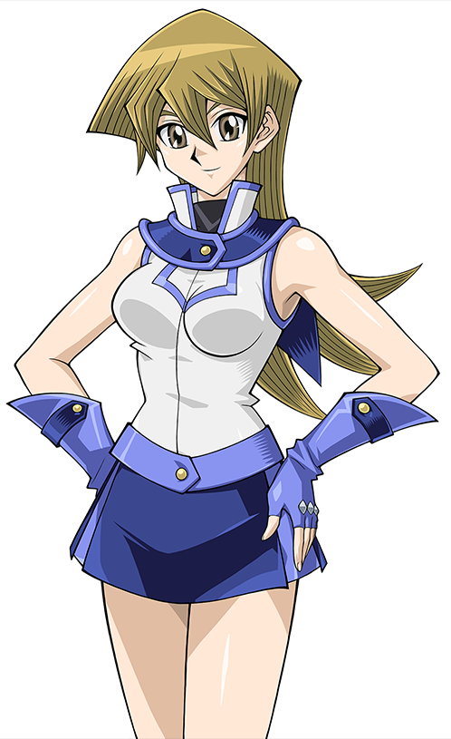
rire à côté de lui.
Judai: Asuka ? Pourquoi est-ce que tu ris ? Sa petite amie sourit.
Asuka (GX): Je pense que je sais pourquoi... mais peut-être devrions-nous entendre la raison de Serena venir d'elle-même. Elle répondit mystérieusement.
Asuka (GX): Je l'ai remarqué après le duel. La façon dont ils interagissent, la façon dont ils se regardent... C'est exactement comme moi et Judai.
Cette dernière pensa au fond d'elle même. Étant elle-même amoureuse, il était clair pour Asuka que Serena et
Sho
avaient déjà développé de forts sentiments l'un pour l'autre. Elle pensait que ces sentiments étaient un facteur important dans le fait que Serena ait choisi le
dortoir qu'elle méprisait auparavant. Judai n'avait pas l'air de comprendre. Elle ne pouvait pas le blâmer, la romance était encore quelque chose de nouveau pour lui.
Le principal Samejima, l'autre Asuka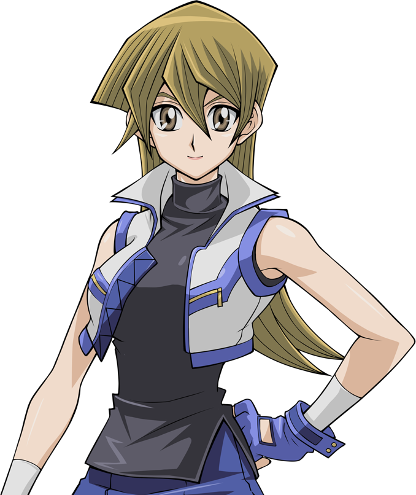,
Yusho,
Rei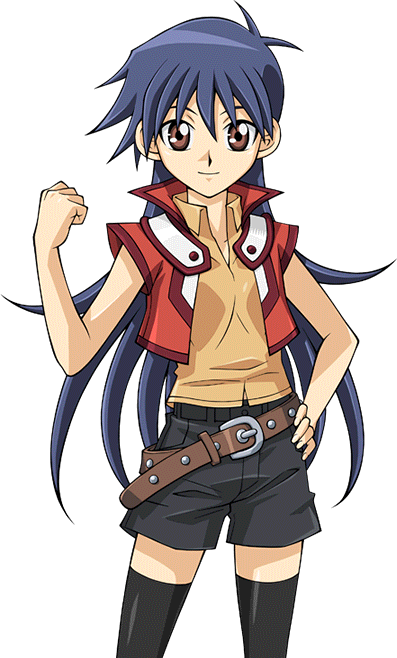 et les autres étudiants
de la Dimension Fusion se sont demandé pourquoi Serena avait fait ce choix. Cela les a déconcertés.
Serena: Eh bien, je pense que je devrais y aller. Il y a d'autres personnes qui attendent de se qualifier.
Serena répondit, alors qu'elle commençait à descendre de l'arène.
Sho: Bien sûr. J'espère que tu apprécieras ton séjour à la Duel Academia. Je sais que ça a été le cas pour moi.
Disait Sho en souriant. Serena a acquiescé.
Serena: Moi aussi. Juste au moment où elle allait partir...
Sho: Serena, attends une seconde ! Je veux te dire autre chose !
Il a dit d'un ton pressé. Serena s'est arrêtée et s'est retournée vers lui.
Serena: O-Oui ?
Elle a demandé, semblant curieuse et nerveuse. Sho a rougi un peu en parlant.
Sho: Je voulais juste... te dire que...
Il a hésité une seconde.
Sho: J'aimais bien tes cheveux... quand ils étaient en queue de cheval avant. Je ne sais pas pourquoi tu les as laissés tomber avant le duel.
Serena: Vraiment ? Tu aimais mes cheveux... quand je portais mon ruban ?
Serena a demandé, devenant elle-même rouge en passant une main dans ses cheveux. C'était la première fois que quelqu'un lui disait quelque chose comme ça. Elle s'est
surprise à sourire de ce commentaire.
Sho: Oui, en effet. Je pense que ça... te va mieux.
Sho répondit, en le disant assez doucement pour que la foule ne puisse pas l'entendre.
Serena: Merci... de m'avoir dit ça.
Serena a dit chaleureusement avant de partir, Sho souriant toujours en la regardant partir. Il a ensuite quitté l'arène afin que le prochain duel de qualification puisse avoir lieu.
En descendant, Serena a été bombardée de questions de la part de ses camarades fugueurs, principalement sur la raison pour laquelle elle a choisi le dortoir avec
lequel elle ne voulait en aucun cas avoir à faire auparavant.
Alex: Pourquoi as-tu changé d'avis, Serena ? A demandé Alex, qui a parlé le plus fort. Serena s'est tournée vers lui et a souri.
Serena: J'ai mes raisons.
C'est tout ce qu'elle a dit avant de s'éloigner, laissant les autres très confus. Après une minute, la foule est redevenue silencieuse avant que le principal Samejima
ne reprenne la parole.
Samejima: Maintenant, continuons les duels de qualification ! La personne suivante, le participant numéro 002 !
Chapitre 14: Aller vers l'avant. La décision de Serena.
Il a fallu quelques heures pour terminer tous les duels de qualification restants. Certains ont duré plus longtemps que d'autres, mais ils valaient tous la peine
d'être regardés. Presque tous les élèves de Yusho se sont qualifiés et ont choisi d'être en Râ Yellow. Cela n'a pas surpris Judai, Serena, Yusho, l'Asuka qui s'est
enfuie avec eux, ou le principal Samejima. Ce qui les a surpris, en revanche, c'est que trois d'entre eux ont choisi d'occuper Osiris Red à la place.
Il s'agissait de Stacy McNard (la fille aux cheveux rouges), Tyler Brooks (le garçon aux cheveux verts) et Alex Parker (le blond). Bien qu'ils aient tous les trois
obtenu des notes assez élevées pour entrer dans Râ Yellow, ils ont choisi d'être dans le dortoir où se trouvait Judai. Interrogés par Judai lui-même après leurs
examens, ils ont répondu que c'était pour le remercier de les avoir aidés à s'échapper d'Academia. Stacy et Tyler avaient perdu tout espoir de s'en sortir jusqu'à ce
que Judai arrive et change tout. Alex était si reconnaissant envers Judai quand il l'a sauvé de Sanders qu'il a voulu devenir un duelliste fort comme lui. En fait, le
jeune trio s'est senti inspiré de marcher sur ses traces et de le rendre fier, ainsi qu'Osiris Red dans son ensemble. Cela a presque fait pleurer l'ancien élève
d'Osiris Red qui leur a dit qu'il était reconnaissant.
Judai a suggéré à Yusho que tout le monde fasse une fête au dortoir d'Osiris Red pour célébrer cela. Il a accepté et a obtenu la permission de Samejima pour le faire.
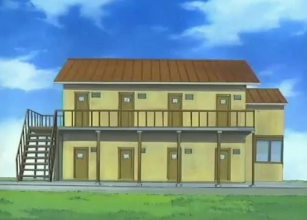
Plus tard dans la soirée, Judai, son Asuka et Sho furent les premiers à arriver au dortoir, portant toute la nourriture et les fournitures dont ils avaient besoin.
Sho: Quand est-ce que tout le monde arrive ?
Sho a demandé alors qu'ils commençaient à tout installer.
Judai: Yusho m'a dit que Serena et les autres étudiants arriveront après avoir reçu leur nouvelle uniforme scolaire. Ne t'inquiète pas, nous serons prêts à faire la fête quand ils arriveront !
Disait Judai avec enthousiasme.
Sho sourit en retour, heureux d'être à nouveau avec son meilleur ami. Cela lui manquait de passer du temps avec lui comme au bon vieux temps.
Il lui manquait surtout quand il avait besoin de quelqu'un à qui parler quand les choses allaient mal dans sa vie... comme maintenant. Seulement, il n'était pas sûr de
pouvoir en parler à Judai. Il faisait de son mieux pour ne pas montrer la douleur et la tristesse qu'il gardait pour lui depuis son retour sur l'île. Sho a presque
paniqué lorsque Rei et Kenzan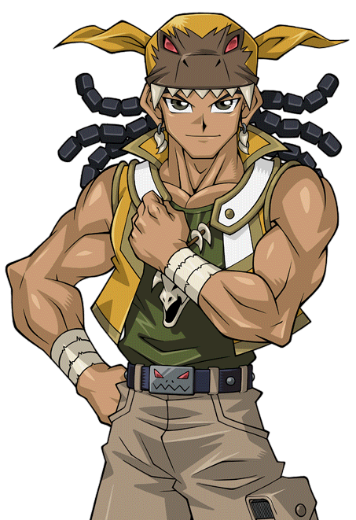
ont posé des questions sur son grand frère. Il ne pouvait pas leur dire ce qui était arrivé à
Ryo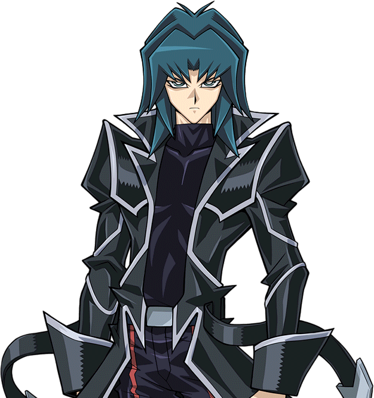. Il n'était pas prêt à le
dire à qui que ce soit, même pas à son meilleur ami... pas encore.
Judai: Sho, tu vas bien mon pote ?
Judai a demandé, en voyant le regard que son meilleur ami avait. Distrait, il secoua la tête et gloussa.
Sho: Désolé, aniki (trad: Aniki = Frérot) ! Je pensais juste au bon vieux temps, c'est tout ! Crois-moi, je vais bien !
Il répondit avec, il l'espérait, un sourire convaincant. Il s'apprêtait à ouvrir une boîte d'argenterie pour la placer sur la table où se trouverait le buffet de
nourriture. Judai cligna des yeux.
Judai: Tu en es sûr ? Parce que tu n'avais pas l'air de te souvenir d'un de nos bons moments...
Il disait, en ayant l'air un peu inquiet. Cela a provoqué une réaction qu'il n'avait pas prévue.
Sho: J'ai dit que j'allais bien !
Sho a soudainement craqué, jetant la boîte à travers la pièce. Le contenu s'est répandu partout. Judai et Asuka le regardaient fixement, choqués par son emportement
inattendu. Sho a réalisé son erreur et a baissé la tête en signe de honte.
Sho: Désolé les amis. Je ne voulais pas vous crier dessus...
Il s'est excusé en commençant à nettoyer.
Asuka (GX): Sho, qu'est-ce qui ne va pas ? Tu ne peux pas nous le dire ?
Asuka a demandé, semblant très préoccupée alors qu'elle et Judai allaient aider. Elle connaissait Sho depuis des années, et elle ne l'avait jamais vu perdre la tête
comme ça. Elle a d'abord pensé que cela avait un rapport avec Serena, qu'elle avait pu le blesser d'une certaine façon. Mais son instinct lui disait que c'était autre
chose, quelque chose de plus personnel...
Cependant, son ami n'a pas répondu. Après que l'argenterie ait été ramassée, nettoyée et placée sur la table, Sho fixa Asuka. Une idée lui est alors venue. Quelque
chose qui lui permettrait à la fois de répondre à ses propres questions et de distraire le couple pour qu'il n'apprenne pas ce qui le blessait vraiment. Il espérait
que cela fonctionnerait.
Sho: Tu as raison, Asuka-san. Quelque chose m'a dérangé ces derniers temps. Et... c'est toi !
Il a crié en désignant Asuka. Cela a définitivement surpris de nouveau les deux amoureux.
Asuka (GX): M-Moi !?
Une Asuka effrayée a demandé. Elle n'avait aucune idée de ce à quoi il faisait référence.
Asuka (GX): Qu'est-ce que j'ai fait !?
Judai: Sho, tu connais Asuka ! Nous la connaissons tous les deux ! Elle ne ferait jamais de mal à personne !
Judai répondit pour sa défense. Sho a regardé Judai droit dans les yeux.
Sho: Judai, je ne suis pas sûr que ce soit Asuka-san du tout !
Judai et Asuka sont devenus encore plus confus.
Judai: Mais de quoi parles-tu ?
Judai a demandé. Sho n'a pas brisé son regard alors qu'il révélait sa raison.
Sho: Après mon duel avec Serena, j'ai vu quelque chose d'impossible. J'ai vu Asuka avec toi dans les tribunes... alors qu'elle était aussi avec Manjoume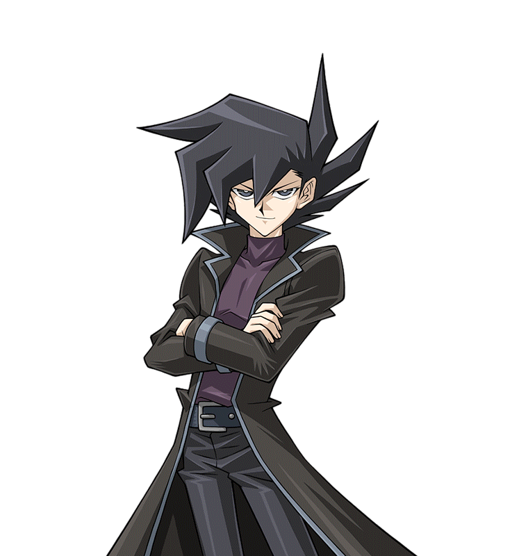 - kun, Kenzan-kun, et Rei en même temps ! Asuka-san était à deux endroits en même temps ! L'un d'entre eux est un imposteur, j'en suis sûr ! Ça ne peut être que ça !
Sho a crié, en désignant Asuka à nouveau.
Il y eut un silence stupéfiant. Sho était sûr que Judai nierait que sa petite amie était un étranger déguisé qui voulait s'approcher suffisamment pour lui faire du mal.
Il était également certain que l'Asuka en face de lui dirait que c'était ridicule. Le couple s'est regardé avant d'écarquiller les yeux, comme s'ils avaient soudainement
compris quelque chose que Sho n'avait pas compris. Un instant plus tard, ils se sont mis à rire bruyamment. Judai ria si fort qu'il tomba sur le dos. Asuka essayait de ne
pas faire la même chose que Judai, tout en se couvrant la bouche.
Clairement, ce n'était pas du tout ce à quoi Sho s'attendait. Il fixa les deux jeunes, complètement abasourdi.
Sho: Vous pensez que c'est drôle !? Je suis sérieux !
Répondit Sho, en essayant de leur faire entendre raison. Judai se relèva, alors qu'il est encore en train de rire.
Judai: Sho, mon pote... il n'y a pas d'imposteur ! Il y a vraiment deux Asukas ! Celui que tu as vu avec Manjome et les autres vient d'un autre monde !
Il expliqua en essayant de se calmer.
Asuka (GX): Il a raison. Judai me l'a expliqué avant que tu nous trouves tout à l'heure. Je suis vraiment l'Asuka que tu connais.
Disait Asuka, toujours en riant un peu. Sho les regarda et s'est senti complètement perdu.
Sho: Attends... quoi !?
Il répondit, se sentant stupide maintenant, clignant deux fois des yeux.
Toute pensée de son vrai problème était maintenant balayée de son esprit. Après s'être finalement maîtrisé, Judai a expliqué à Sho sa mission pour sauver Serena et
comment il a fini par amener une version alternative d'Asuka dans leur monde. Le petit gars était plus étonné que confus à ce stade.
Sho: Serena... vient d'un autre monde !? Le même monde que cette "autre" Asuka !?
Demanda Sho, qui pouvait à peine se tenir debout à ce stade.
Sho: A peu près, mon pote. Désolé, je n'ai pas pu te le dire avant.
Judai s'est excusé. Il fallut une minute ou deux à Sho pour se remettre de cette énorme révélation.
Sho: Ne le sois pas. Je n'avais aucun moyen de savoir. Et Asuka-san... désolé de t'avoir accusée.
Sho s'excusait avec regret à Asuka. Mais cette dernière secoua la tête.
Asuka: Ce n'est pas grave. Mettons ça derrière nous et finissons d'aménager cet endroit.
Asuka a suggéré.
Sho était plus qu'heureux de le faire. Il était également reconnaissant. Sa petite diversion s'était peut-être déroulée différemment de ce qu'il pensait, mais au moins
elle avait fonctionné. Maintenant, ils pensent que tout va bien pour lui.
À ce stade, ils n'avaient plus qu'à installer toutes les décorations. Heureusement, il n'y en avait pas beaucoup. Avant longtemps, l'endroit semblait prêt. Asuka a dit
qu'elle avait besoin de se préparer pour la fête. Alors elle s'est excusée, et s'est dirigée vers la salle de bain. Judai et Sho sont maintenant en train de se reposer.
Judai: Mec, ça fait du bien d'être de retour ici.
Sho: C'est sûr. Ce qui est bizarre, c'est qu'aucun de nous n'est étudiant cette fois-ci.
Judai: C'est vrai. En parlant d'étudiants, que penses-tu de Serena ?
Demanda Judai. À sa grande surprise, Sho est devenu un peu rouge.
Sho: Qu'est-ce que tu veux dire ?
Il a demandé, semblant nerveux maintenant. Judai inclina la tête.
Judai: Tu sais, tu viens de l'affronter en duel. Elle était plutôt forte, n'est-ce pas ?
Sho souria et a acquiescé.
Sho: Oui, elle était jolie.
Il a dit très doucement.
Judai: Huh ? Je n'ai pas compris.
Disait Judai, en essayant de l'entendre. Sho a paniqué un peu avant de reprendre la parole.
Sho: Oh, j'ai dit qu'elle était assez forte, c'est vrai ! Elle a failli m'avoir une ou deux fois ! Je n'aurais jamais cru qu'elle me forcerait à terminer notre duel
par un match nul.
Il répondit plus fort. Il ne voulait pas que Judai soit au courant de ses sentiments grandissants pour Serena. Judai ria, ne semblait pas avoir remarqué que
quelque chose n'allait pas.
Judai: J'ai été tout aussi surpris. Mais là encore, sachant comment elle a été formée, cela ne devrait vraiment pas être une surprise. Tu ne penses pas ?
Sho secoua la tête.
Sho: Non, ça ne devrait pas. Je n'arrive toujours pas à croire qu'elle vient d'un tout autre monde. Je suis aussi toujours choqué par l'autre école qu'elle
fréquentait. Ce que les étudiants y faisaient...
Sho disait, se rappelant ce que Judai a dit sur Academia.
Sho: Je suis content que tu l'aies sortie de là. Elle sera certainement plus heureuse ici. Il a dit. Judai acquiesca.
Judai: Absolument.
Sho a ensuite regardé le sol, en réfléchissant. Il ne pouvait pas imaginer quel genre de vie Serena avait eu avant que Judai ne la trouve. Il lui était très
reconnaissant de l'avoir amenée ici... où il l'avait rencontrée. Il espérait pouvoir passer un peu plus de temps avec elle, pour apprendre à mieux la connaître...
Avant que Sho puisse dire un autre mot, leurs vieux amis sont entrés.
Kenzan: Judai-aniki ! Tu m'as manqué, espèce de vieux brachiosaure-don !
Kenzan cria joyeusement en courant vers Judai et en le serrant dans ses bras.
Judai: Haha, content de te voir aussi Kenzan !
Judai vit alors qu'avec lui se trouvaient Manjome et Rei. Judai souria en s'approchant lui aussi de son ancien rival.
Judai: Manjome ! Comment ça va ?
Demanda Judai en se libérant de l'emprise de Kenzan. Le Duelliste habillé en noir a gloussé.
Manjoume: Plutôt bien, en fait. Quand j'ai appris que tu étais revenu, je n'allais pas laisser passer l'occasion de te mettre enfin à terre. En plus de cela, je
suis presque sûr d'avoir enfin trouver la fille de mes rêves.
Il a dit, débordant de confiance. De manière inattendue, Judai s'enroula autour de son épaule (ce qui l'agaça).
Judai: C'est génial ! Moi aussi ! Il a dit joyeusement. Manjome, Kenzan, et Rei ont été surpris.
Rei: Tu as une petite amie aussi ? Demande Rei, l'air légèrement déçu. Judai acquiesce.
Judai: Oh oui, c'est la meilleure ! Alors Manjome... Judai dit, en se tournant vers son rival, qui a forcé le bras de Judai à le lâcher.
Judai: Avec qui tu t'est mis ? Manjome a souri comme si rien ne pouvait lui faire du mal.
Manjoume: Eh bien, ce n'est pas encore officiel, mais ce n'est qu'une question de temps. Essaie de ne pas être jaloux, mais c'est...
Il s'est ensuite arrêté et a secoué la tête. Il avait une bien meilleure idée.
Manjoume: En fait, parles-nous d'abord de ta copine. Je suis sûr qu'elle est bien pour quelqu'un comme toi, mais je te promets Judai... la mienne est bien plus spéciale.
Il a dit. Judai et Sho ont tous deux haussé un sourcil. Kenzan et Rei secouèrent la tête, n'arrivant pas à croire que le gars était encore aussi délirant.
Sho: J'ai... des doutes. Disait Sho. Manjome ricana.
Manjoume: Pense ce que tu veux, mais une fois que tu l'auras vue, tu croiras le contraire. Il s'est ensuite retourné vers son rival.
Manjoume: Maintenant, qui est ta personne spéciale ? Il a demandé.
Juste à ce moment, Asuka est sortie de la salle de bain et a vu les nouveaux arrivants.
Asuka (GX): Hé Manjome ! Hé Kenzan ! Ça fait un bail, n'est-ce pas ?
Elle a demandé, semblant heureuse de les voir. Manjome et Kenzan sont restés bouche bée et surpris. Rei, cependant, a su immédiatement que c'était l'Asuka qu'elle
connaissait. Les garçons, eux, cependant ne savaient pas encore.
Kenzan: Asuka-senpai !? Mais comment !? Tu nous as laissés pour aller parler avec Samejima-Kôshô et à un type nommé Yusho Sakaki ! Comment tu as fait pour nous
devancer ici-saurus !?
Kenzan a demandé avec incrédulité.
Asuka semblait confuse au début, mais elle s'est souvenue de ce que Sho avait dit il n'y a pas longtemps. Elle a alors gloussé.
Asuka (GX): Vous ne me croiriez pas si je vous le disais.
Elle répondit en jetant un regard rapide à Judai, qui lui a fait un clin d'oeil. Manjome prit ensuite la parole, se remettant rapidement du choc de voir Asuka
apparaître si soudainement alors qu'elle devrait être ailleurs.
Manjoume: Je suis tout aussi surpris, mais qui s'en soucie ? C'est trop parfait. Tenjoin-kun, Judai vient de nous dire qu'il a une petite amie maintenant. Il était
sur le point de nous le dire, n'est-ce pas ?
Demanda Manjome en se tournant à nouveau vers Judai. Ce dernier afficha un large sourire et gloussa.
Judai: Peut-être que tu devrais plutôt demander à Asuka. Disait Judai en désignant la jeune femme.
Il avait l'air d'un enfant sur le point de faire une grosse farce. Manjome fit alors face à Asuka, à nouveau confus.
Manjoume: De quoi parle-t-il ? Il a demandé. Asuka a souri d'une manière qu'il n'avait jamais vue. Elle semblait presque rayonnante.
Asuka (GX): Tu as demandé à propos de la petite amie de Judai ? Eh bien, la vérité est que...
Elle a maintenu le suspense pendant plusieurs secondes avant de lâcher la bombe.
Asuka (GX): Tu es en train de la regarder.
Les mâchoires de Kenzan et Rei se sont décrochées à la révélation d'Asuka. Bien sûr, leurs réactions n'étaient rien à côté de celle de Manjome. Non seulement sa bouche
s'est ouverte, mais son visage a également pâli et il est tombé comiquement sur le côté. Il a heurté le sol avec un bruit sourd. On aurait dit qu'il s'était évanoui.
Sho: Manjome-kun ? Est-ce que tu vas... bien ?
Demanda Sho en s'approchant et en frappant Manjome au visage. Il n'obtint aucune réponse. Judai ne pû s'empêcher de rire.
Judai: Il l'a mieux pris que je ne le pensais. Je m'attendais à ce qu'il panique et menace de me tuer ou quelque chose comme ça.
Judai répondit, faisant rire Asuka aussi.
Asuka: Moi aussi. Elle répondit.
Kenzan a ensuite porté le Manjome inconscient sur le canapé voisin. C'est juste après que Kenzan et Rei ont remarqué que Sho ne semblait pas être choqué par la nouvelle.
Rei: Hey Sho ! Tu étais déjà au courant !? Rei lui a demandé d'un air accusateur. Sho hocha la tête, souriant lui-même.
Sho: En fait, j'ai été le premier à l'apprendre. Quand je suis allé chercher Judai avant pour les duels de qualification, il était ici avec Asuka-san. Je les ai
vus... se mettre officiellement ensemble.
Il répindit délicatement, en prenant soin de laisser de côté les détails "privés". Judai et Asuka lui en ont été très reconnaissants. Kenzan a alors remarqué une chose
étrange dans cette déclaration.
Kenzan: Attendez un instant ! Quelque chose ne colle pas ! Asuka-senpai ne pouvait pas être avec Judai-aniki ! Elle était avec nous tout ce temps ! Nous sommes
tombés sur elle dans le bâtiment principal en allant vers l'arène de duel ! Elle ne pouvait pas être avec nous et Judai-aniki en même temps-don !
Le jeune homme faisait remarquer. Tout le monde sauf Kenzan a alors gloussé.
Kenzan: Huh ? J'ai raté quelque chose-don ?
Judai: Sho, pourquoi tu ne lui dis pas cette fois ? Judai demanda à Sho.
Après avoir été mis au courant, Kenzan grogna d'agacement en montrant ses yeux de dino.
Kenzan: Merde ! Pourquoi est-ce que je rate toujours des choses comme ça-saurus !? Kenzen s'est plaint.
À ce stade, le seul à ne pas être au courant de la mission de Judai était Manjome, qui était toujours évanoui sur le canapé. Ils lui diront quand il se réveillera.
À ce moment-là, la porte s'est ouverte à nouveau. Yusho, Alex, et le reste de ses élèves sont enfin arrivés. Alex, Tyler et Stacy portaient leurs nouvelles vestes
d'Osiris Red, tandis que tous les autres portaient leurs vestes de Râ Yellow. Ils étaient tous étonnés de l'aspect de la pièce maintenant qu'elle était décorée.
Judai: Hé les amis ! Content que vous ayez pu venir ! Répondit Judai en souhaitant la bienvenue à tout le monde.
Yusho: Nous ne manquerions çela pour rien au monde. Yusho a dit, en souriant.
Asuka (GX): Où sont Serena et l'autre moi ? L'Asuka de Judai a demandé, en remarquant que les deux filles étaient absents.
Yusho: Elles seront là sous peu. L'Asuka que je connais fait visiter à Serena le dortoir des filles des Obelisk Blue avant de venir ici.
Judai a ensuite présenté Yusho à Sho et à Kenzan. Lorsque Yusho a posé des questions sur le jeune homme qui dormait sur le canapé, Judai lui a dit en plaisantant que
c'était une longue histoire.
C'est alors que la fête de la qualification a enfin commencé. Tout le monde commençait à manger, s'est mêlé aux autres et ont rigolé. Ils ont tous parlé de l'impatience qu'ils avaient
de commencer leur nouvelle éducation. Yusho a surpris Judai lorsqu'il lui a dit que principal Samejima lui avait offert un poste à la Duel Academia en tant que
nouveau superviseur d'Osiris Red.
Judai: C'est génial Yusho !
Sho: Vous allez accepter ? Demanda Sho. L'homme plus âgé semblait résolu en répondant.
Yusho: C'est une offre alléchante qu'il a faite, mais je lui ai dit que je ne pouvais pas rester ici. J'ai déjà été éloigné de ma famille pendant bien trop longtemps.
Yusho se tourna alors vers le jeune duelliste qui l'avait tant aidé.
Yusho: Judai, peux-tu contacter ton ami Astral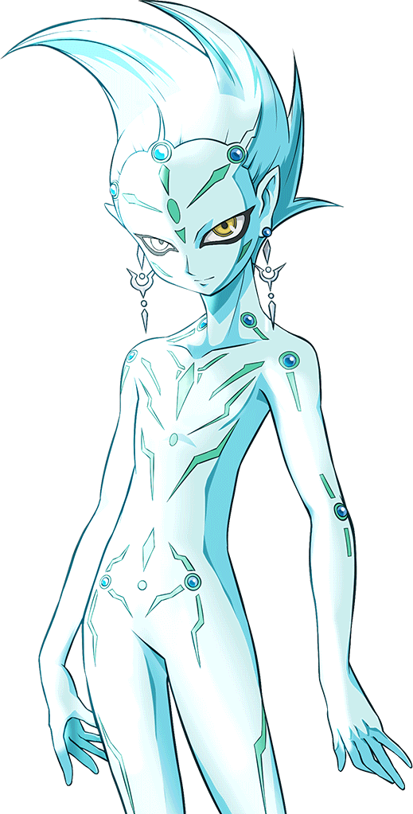 pour qu'il vienne ici et me ramène dans mon monde ? Je veux partir à la première heure demain matin.
Il a demandé. Bien qu'un peu déçu, Judai a compris ses raisons.
Sa femme, Yoko, et son fils,
Yuya, ont été forcés de vivre leur
vie sans lui pendant 3 années entières. Il est d'abord allé dans la Dimension Xyz, puis dans la Dimension Fusion par accident. Les deux fois où il a voyagé, Yusho
n'avait aucun moyen de rentrer chez lui. Maintenant, grâce au dirigeable d'Astral,
il peut enfin retourner auprès des personnes qu'il aime le plus. Judai sourit et hocha la tête.
Judai: Bien sûr, Yusho. Je contacterai Astral demain pour qu'il te ramène chez toi.
Il répondit. Yusho lui fit un sourire très reconnaissant.
Yusho: Je te remercie. Il a dit avec beaucoup de gratitude.
Asuka (GX): Et mon autre moi ? Elle part avec vous ? L'Asuka de Judai a demandé.
Yusho: Oui, elle vient. Elle veut aider à combattre Academia. Cela, et aussi, d'après elle, ce serait extrèmement confus d'avoir deux Asukas au même endroit et au
même moment.
Il disait en riant. Tous les autres ont fait de même.
Avant qu'ils ne s'en rendent compte, les deux dernières personnes attendues étaient enfin arrivées. Alors que la porte de la salle s'ouvrait une fois de plus, l'Asuka
de la Dimension Fusion et Serena sont entrées. Sho et Kenzan ont été stupéfaits de voir à quel point les deux Asukas se ressemblaient... mais pas autant que leur Asuka
elle-même. Quand elle a vu son double pour la première fois, elle a eu l'impression de se regarder dans un miroir... sauf qu'il n'y avait pas de miroir. L'Asuka qui
était avec Serena a ressenti exactement la même chose lorsqu'elle a aperçu son doppelgänger.
Les deux filles ont également vu que l'Asuka de ce monde tenait la main de Judai. L'Asuka de la Dimension Fusion se souria à elle-même, heureuse que Judai ait quelqu'un.
C'était juste bizarre que ce soit un double d'elle. Quant à Serena, sa réaction était différente. Auparavant, elle n'aimait pas que Judai traînait avec d'autres filles.
Cela la rendait furieuse. Maintenant, pour une raison quelconque, cela ne la dérangeait plus autant. Ça l'irritait toujours, mais pas de la même façon. Elle a décidé que
peut-être elle se sentait juste protectrice envers lui.
Sho est resté bouche bée en voyant Serena dans son nouvel uniforme d'Obelisk Blue.
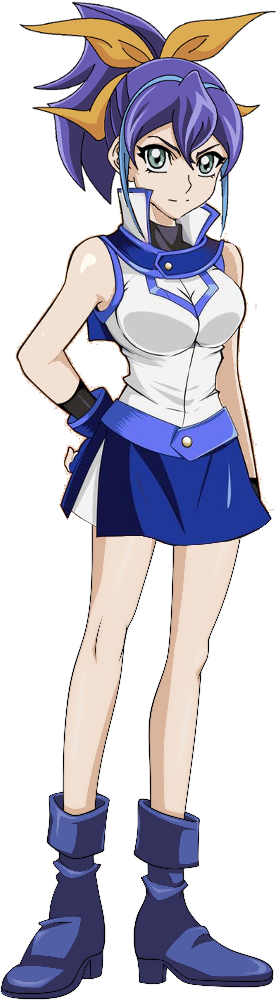
Il a également vu que ses cheveux étaient à nouveau attachés en queue de cheval. Il a senti qu'il avait chaud sous le col et a souri nerveusement. Serena l'a vu du
haut des escaliers et a souri en retour, devenant elle-même un peu rouge.
Asuka (Arc-V): Les amis.
L'Asuka de la dimension de fusion parla alors qu'elle et Serena descendaient les escaliers. Lorsque les deux Asukas se sont retrouvées face à face, il y a eu un moment
de silence très gênant. Aucune des deux ne savait quoi dire à l'autre. Finalement, c'est l'Asuka de Judai commença en première.
Asuka (GX): Alors..., Judai m'a dit que tu as... sauvé beaucoup de ces enfants. C'était très courageux de ta part.
L'Asuka originale s'addressa à elle, l'air sincère et souriant. Son double sourit en retour.
Asuka (Arc-V): Hum, merci. Je suis sûr et certaine que, si nos rôles étaient inversées, tu aurais fait la même chose.
Avec cela, la glace était brisée et elles sont rapidement devenus amies. Judai a ensuite dit à l'Asuka de la Dimension Fusion que Sho et Kenzan avaient été informés à son sujet.
Asuka (Arc-V): Bien. Je suis heureuse qu'il n'y ait plus de malentendus entre nous. Désolé de n'avoir pas réussie à te le dire avant, Kenzan-kun.
Elle s'est excusée.
Kenzan: Je l'admets, c'est vraiment bizarre. Mais bon, tout les amis de Judai-aniki sont aussi des amis à nous-don.
Kenzan a répondu avec un sourire.
Serena: Donc tu est un ami de Judai aussi ? Demanda Serena en s'approchant.
Kenzan: Eh bien, si ce n'est pas la nouvelle étudiante ? Oui, mon nom est Tyranno Kenzan. J'ai rencontré Judai-aniki pendant sa deuxième année. Il a gagné mon
respect en tant que duelliste et en tant qu'ami. Ravi de te rencontrer Serena, et bienvenue à la Duel Academia. Tu as des compétences vraiment impressionnantes.
J'espère que nous pourrons nous battre en duel un jour-don.
Serena: Merci. Moi aussi.
Serena répondit avant de se tourner vers Sho.
Sho: Hey Sho. De quoi ai-je l'air ?
La fille a demandé, montrant son nouvel uniforme. Sho était encore en train de rougir quand il a répondu.
Sho: Tu... es superbe. Je suis content que tu sois là.
Serena: Moi aussi.
C'est juste à ce moment que Manjome s'est finalement réveillé et s'est assis sur le canapé.
Serena: Qui-est-ce ? Il était avec toi au stade, Asuka.
Demanda Serena à celle qu'elle connaissait. Asuka a ressenti de la pitié en le regardant fixement.
Asuka (Arc-V): Un autre ami de Judai qui m'a confondu avec quelqu'un d'autre.
L'Asuka de la Dimension Fusion a alors décidé d'approcher Manjome. Elle pensait qu'elle lui devait la vérité après toutes les dérobades qu'elle avait faites. Manjome a
levé les yeux sur Asuka lorsqu'elle était devant lui et a secoué la tête.
Manjoume: Oh mec, quel cauchemar Tenjoin-kun. J'ai rêvé que tu disais être la petite amie de Judai.
Il a dit en se tenant la tête. Asuka a souri malicieusement.
Asuka (Arc-V): Oh, je ne suis pas la petite amie de Judai.
Elle a dit à voix basse. A ce moment, Manjome s'est senti plus joyeux et s'est levé d'un bond.
Manjoume: Dieu merci ! Je pensais que c'était la fin du monde pour moi.
Il dit, l'air soulagé. Il pensait que les choses iraient mieux maintenant. Malheureusement pour lui...
Asuka (Arc-V): Mais je suis presque sûre que c'est cette Asuka qui est la petite amie de Judai.
Elle a dit, en montrant du doigt son épaule.
Manjoume: Huh ?
Manjome a regardé où elle pointait et a failli avoir une crise cardiaque.
Manjoume: Quoi !?
Il a vu Asuka debout à côté de Judai, les mains entrelacées. Il regarda d'eux à l'Asuka qui lui parlait maintenant et inversement.
Manjoume: Qu'est-ce qui se passe, bon sang !? Je suis encore en train de faire un cauchemar ou quoi... !?
Il ne pouvait pas s'en empêcher, il s'était encore évanoui sur le canapé. L'Asuka de la dimension Fusion n'a pas pu s'empêcher de rire, comme tout le monde. Peut-être
qu'elle essaierait de lui expliquer à nouveau plus tard, lorsqu'il reprendrait conscience.
Judai: Dis Serena, je voulais te demander. Pourquoi as-tu choisi d'être parmis les Obelisk Blue ?
Judai a finalement demandé après un moment.
Yusho: Je suis très curieux de le savoir moi-même. Disait Yusho.
Apparemment, Serena n'a encore dit à personne sa raison. Même l'Asuka avec qui elle s'est liée d'amitié ne connaissait pas la réponse. Après un rapide coup d'oeil à
Sho, Serena soupira et s'est finalement confessée.
Serena: Je ne voulais rien dire avant que tout le monde soit là, en fait. Quand j'ai entendu le nom du dortoir bleu, j'ai voulu m'en éloigner autant que possible.
J'ai vraiment pensé à emménager à Osiris Red, parce que c'est là que tu étais heureux, Judai.
Serena souria à Judai, qui lui rendit le sourire aussi.
Serena: Puis je me suis sentie en conflit quand j'ai vu à quoi ressemblait Râ Yellow. Bien que je me soucie de Judai, je voulais aussi suivre ma propre voie, alors
j'ai pensé que ce serait un début plus approprié. Ce n'est que lors de mon duel avec Sho que j'ai fini par me convaincre de ne pas détester quelque chose juste à
cause de son nom, surtout si ce nom a une origine différente ici. Si j'ai choisi Obelisk Blue, c'est parce que...
Elle a jeté un nouveau regard à Sho pendant une fraction de seconde.
Serena: C'est parce que je voulais être un exemple pour tous les autres étudiants qui ont fui Academia. Un exemple pour leur montrer qu'un dortoir ne devrait pas
être jugé par son seul nom, mais plutôt par les étudiants qui vivent sous son toit. J'espère que tu n'est pas déçu.
Serena demanda à Judai, qui a secoué la tête.
Judai: Bien sûr que non. C'est sûr, j'aurais été ravie que tu choisisses le dortoir rouge, mais je suis d'accord avec n'importe quel dortoir... du moment que tu es heureuse.
Serena a souri chaleureusement avant de donner une grande accolade à Judai. Bien qu'un peu surpris, Judai lui a rendu son étreinte. En se libérant, Serena s'est
tournée vers l'Asuka qui était avec lui. Au choc de cette Asuka, Serena lui a lancé un regard glacial.
Serena: Ecoute, si tu veux être avec Judai, et si être avec toi le rend heureux, je ne m'y opposerai pas. Sache juste ceci. J'en suis venu à vraiment me soucier de
lui. Il a fait beaucoup pour moi et je lui en suis très reconnaissante. Si tu le blesses de quelque façon que ce soit... tu le regretteras.
Elle a dit d'un ton bas et dangereux.
Tout le monde s'est figé à cause de l'avertissement inattendu de Serena. Asuka a transpiré et a souri nerveusement.
Asuka (GX): Ne t'inquiète pas Serena. Blesser Judai est quelque chose que je n'ai jamais prévu de faire.
Serena l'a regardée fixement pendant un long moment avant de hocher la tête avec un sourire satisfait.
Serena: Bien. C'est tout ce que j'avais besoin d'entendre. Elle le disait d'un air suffisant.
Elle a donné cet avertissement à Asuka pour deux raisons. Une, pour lui faire savoir qu'elle était sérieuse. Deuxièmement, et plus important, pour qu'elle puisse enfin
mettre de côté ces sentiments de fureur d'avant. C'était plutôt libérateur en fait. De plus, elle ne savait pas pourquoi, mais elle espérait secrètement que Sho ne
trouverait pas de fille avec qui traîner... sauf peut-être elle-même.
Sho: Ok, hum... Sho commença à discuter, essayant de briser la glace.
Sho: Pourquoi ne pas raconter à Serena certaines de nos aventures à l'académie ? Judai a immédiatement réagi.
Judai: Super idée, mon pote ! Pourquoi pas la fois où nous avons affronté les freres Paradox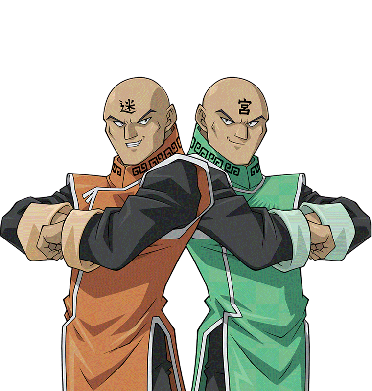 ? Judai a suggéré.
Etudiants: Qui ? La plupart des membres du groupe ont demandé.
Judai et Sho expliquèrent le duel et les circonstances qui y ont mené. Après cela, ils ont raconté de nombreuses histoires. Sho grimaça lorsqu'ils apprirent comment il
s'était fait prendre dans le dortoir des filles. Serena l'a regardé fixement.
Serena: Je n'arrive pas à croire que tu sois tombé dans le panneau. C'était manifestement une ruse pour t'attirer dans les ennuis.
Serena disait avec surprise.
Asuka (GX): Eh bien, pour être honnête, cette lettre ne lui était pas destinée. Pourtant, si sans cela, je n'aurais jamais affronté Judai cette nuit-là.
Disait l'Asuka de Judai. Elle a ensuite souri à son nouveau petit ami.
Asuka (GX): Il m'a vraiment impressionné. Ce duel a été le début pour nous. Je ne le savais pas encore, mais c'est à ce moment-là que j'ai commencé à... tomber
amoureuse de lui.
Judai souriait et rougissait.
Judai: C'était vraiment une sacrée nuit.
Il répondit, en ayant l'air embarrassé lui-même. Il ne pouvait toujours pas croire que lui et Asuka étaient maintenant ensemble. Être le petit ami d'Asuka était une
chose à laquelle il allait devoir s'habituer. Il espère qu'il la rendra heureuse.
Manjoume: Alors c'est comme ça que tout a commencé.
Judai et les autres se sont tournés vers la nouvelle voix à proximité. Manjome était à nouveau réveillé, et se tenait maintenant derrière Judai. Ils ont pensé qu'il
avait dû reprendre conscience pendant que Judai et Sho racontaient leurs histoires.
Kenzan: Hey ! La Belle au Bois Dormant est enfin réveillée-don ! Kenzan plaisanta à son sujet.
Manjoume: Haha, très drôle. Ecoute, je n'ai toujours pas la moindre idée de comment il pourrait y avoir plus d'une Tenjoin-kun ici. Mais...
Il s'est ensuite adressé directement à Judai.
Manjoume: Judai, j'espère que tu réalises la chance que tu as. Tu ferais mieux de la traiter comme la femme qu'elle est, ou tu auras à répondre de moi aussi ! Tu as compris !?
Judai: Oh bien sûr, Manjoume ! Je vais le faire ! Pas d'inquiétude à avoir !
Manjome eut un sourire de satisfaction avant de se tourner vers l'autre Asuka, qui était assise à côté de Yusho.
Manjoume: Maintenant, je voudrais connaître ton histoire. Demanda-t-il.
L'Asuka de la Dimension Fusion s'expliqua alors à lui. Une fois qu'il fut enfin au courant de tous les détails, Manjome soupira.
Manjoume: Bon sang, je pensais que toutes ces folies étaient terminées après l'obtention de notre diplôme. Mais je suppose qu'avec Yuki Judai dans les environs,
il n'y a aucun moyen d'échapper à cela.
Il a ensuite regardé l'Asuka de la Dimension Fusion dans les yeux. Il semblait vraiment mal à l'aise.
Manjoume: Ecoute, je suis euh... désolé pour la façon dont j'étais avant. Asuka secoua la tête.
Asuka (Arc-V): Ce n'était pas entièrement de ta faute. Tu as cru que j'étais quelqu'un d'autre. Bien avant, je ne pouvais pas vraiment m'expliquer. Tu ne m'aurais
pas cru si j'avais essayé.
Elle a dit. Manjome n'a pas répondu, mais il semblait toujours aussi déçu. Probablement parce que la fille qu'il voulait a choisi d'être avec quelqu'un d'autre. Elle
se sentait un peu mal à propos de ça. Un silence gênant a suivi...
Alex: Hé Judai ! On est presque à court de boissons ! Est-ce qu'il en reste ?
Demanda Alex en s'approchant du groupe, rompant le silence.
Judai: Bien sûr, il doit y avoir d'autres qui refroidit dans le frigo à l'étage. Répondit ce dernier.
Le garçon l'a remercié en courant dans les escaliers. Après le départ d'Alex, Judai a pensé à quelque chose qui pourrait diminuer la tension.
Judai: Oh hé ! Je viens de me souvenir ! Il y a quelque chose que je veux montrer à tout le monde. Je pense que j'ai encore cette photo de moi et Sho quand nous
avons commencé nos années ici. Je l'ai sortie de mon sac tout à l'heure.
Il a suggéré en fouillant dans ses poches. À ce moment-là, Sho a commencé à paniquer.
Sho: Attends, Judai ! Je ne pense pas que nous devions montrer ça à tout le monde !
Serena, l'Asuka de la dimension Fusion, et Yusho se demandèrent pourquoi il agissait de la sorte. La vérité, c'est que Sho ne voulait pas que Serena voit son ancienne
apparence. Elle se serait probablement moquée de lui.
Judai: Oh allez ! Il n'y a pas de mal à ça ! Maintenant, où je l'ai mis ?
Judai se demande alors qu'il continue à le chercher.
Judai: Ah, le voilà ! Il disait en la sortant.
Sho: Non !
A la grande horreur de Sho, Judai a trouvé la photo qu'il cherchait et l'a montrée à Serena. C'était une photo qu'ils avaient prise ensemble juste après le début de
leur première année.
Sho: Génial. Tuez-moi maintenant.
Le garçon embarrassé s'est mis à jubiler. Mais quand Serena a vu la photo...
Serena: C'est vraiment toi ? Tu n'as pas l'air si mal que ça ici. Serena disait la vérité.
Elle était vraiment surprise de voir à quel point Sho était différent dans le passé. Selon elle, le Sho de la photo était en fait... plus beau. De plus, elle avait
l'impression que son apparence passée (les lunettes et son ancienne coiffure) ressemblait plus à sa vraie personnalité qu'à son apparence actuelle. Sho a été abasourdi par la réaction de Serena.
Sho: Vraiment ? Tu ne penses pas que j'avais l'air... ringard ? Il a demandé nerveusement.
Serena: Pourquoi est-ce que je penserais ça ? Je suis en fait plus curieux de savoir pourquoi tu as changé de look en premier lieu.
Serena a répondu.
Rei: Sho a répondu que c'était l'idée de son frère.
Serena: Ton frère... tu l'as mentionné après notre duel. A quoi ressemble-t-il ? Demanda Serena, maintenant curieuse.
Sho a alors commencé à raconter l'histoire de son frère, bien qu'il semblait le faire un peu à contrecœur.
Sho: Il s'appelle Ryo Marufuji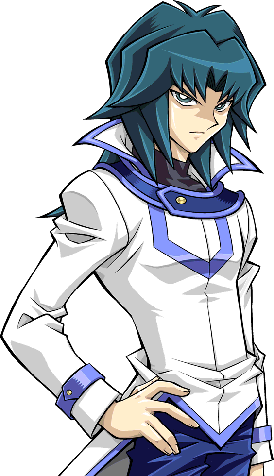
. Il était en dernière année quand Judai et moi sommes arrivés ici. Il était le meilleur étudiant de la Duel Academia. Il portait le titre de "Kaiser Ryo" pour
cette raison. En fait, à l'époque, Nii-san (trad: Nii-san = Grand Frère) était le seul duelliste de l'académie à avoir battu Judai en duel.
Serena s'est tournée vers Judai, choquée.
Serena: Le frère de Sho t'a battu !?
Elle a demandé avec incrédulité. Après l'avoir vu battre facilement
Barrett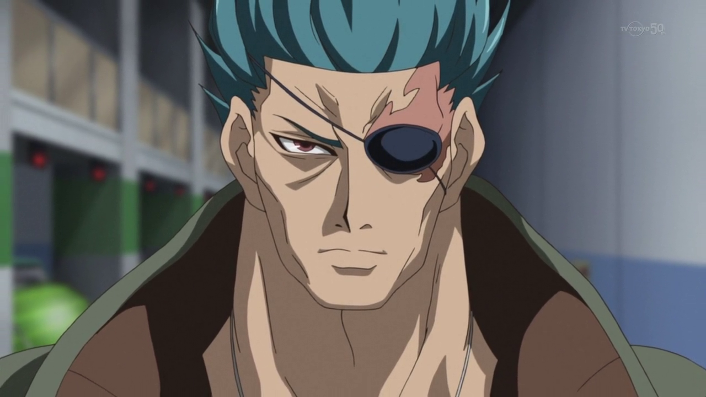, Serena pensait que Judai pouvait
battre n'importe quel duelliste sur son chemin.
Judai: En effet. C'était l'un des adversaires les plus coriaces que j'ai eu à affronter. Nous avons fait une revanche pour son duel de remise des diplomes. Mec,
c'était quelque chose ! Tu aurais dû être là ! A la fin, notre duel s'est terminé par un match nul...
Serena: Comme mon duel avec Sho. Disait-elle doucement.
Elle commença à voir une sorte d'ironie ici, et sourit.
Serena: Alors, qu'est-ce que Ryo a fait depuis qu'il quitté l'académie ?
Elle a alors vu Sho hésiter davantage avant de poursuivre. Cela n'a pas échappé à l'attention de tous ses autres amis.
Sho: Après avoir obtenu son diplôme, il a rejoint une Ligue de duels professionnels. Il s'en sortait plutôt bien. Enfin, jusqu'à ce que...
Sho s'est arrêté un instant.
Sho: Jusqu'à ce qu'il perde contre un autre Duelliste Professionel. Il s'appelaitEdo Phoenix.
Serena, Yusho, et leur Asuka ont presque crié de surprise. Judai a émis un petit rire.
Judai: Oh oui, c'est vrai. Asuka n'est pas la seule ici à avoir un double d'un autre monde. Edo en a un aussi.
Il a expliqué, à la surprise de ses camarades de classe. Tous les trois commencèrent à se demander combien d'autres versions de certaines personnes existent dans d'autres mondes.
Sho: Quoi qu'il en soit, après cela, Nii-san a commencé à suivre un chemin obscur. Au départ, il était une personne respectable et un
Duelliste qui se souciait des autres et de leurs cartes. Après cette défaite, il a disparu et est réapparu plus tard comme un duelliste beaucoup plus fort, mais
plus impitoyable. Il est alors devenu connu sous le nom de
"Hell Kaiser Ryo". Quand je le voyais à la télévision, il semblait être une personne complètement différente. J'ai essayé de le ramener une fois, mais j'ai échoué.
Sho expliqua tristement. Serena se sentait vraiment mal pour lui.
Serena: Et toi, Judai ? Tu ne pouvais pas lui faire entendre raison ?
Judai: Malheuresement, non, je n'en ai pas eu l'occasion. Je faisais autre chose à ce moment-là. Le temps que ce soit fait, Ryo était déjà parti.
Il expliqua, ayant l'air découragé. Sho a ensuite continué à partir de là.
Sho: Cela n'a pas eu d'importance. Ryo a fini par s'adoucir pour redevenir ce qu'il était avant. Cependant, pendant ce temps là, il a commencé à avoir des
problèmes cardiaques à cause de l'utilisation de colliers de chocs électriques sur lui-même.
Cela a vraiment choqué Serena, ainsi que Yusho et leur Asuka.
Serena: Des colliers de chocs électriques !? Tu est sérieux !? Elle a demandé. Sho a acquiescé.
Sho: Ils ont vraiment eu raison de lui. Finalement, c'est devenu si grave qu'il a dû subir une opération du cœur.
Sho n'a pas révélé la vraie raison des problèmes cardiaques de Ryo. Et ce à quoi ces problèmes ont conduit...
Yusho: Je suis vraiment désolé d'entendre ça, Sho. Est-ce que ton frère va mieux maintenant ? Yusho a demandé gentiment.
Sho n'a pas répondu tout de suite. Serena a alors remarqué que Sho resserrait son pantalon et sa mâchoire.
Sho: Il va bien. C'est juste que Nii-san... ne peut plus faire de duel. Son coeur est fragile en ce moment et il ne peut pas se permettre de le mettre en danger.
Nous travaillons toujours ensemble pour mettre en place notre ligue professionnelle Cyber. Je m'occupe juste des parties les plus stressantes.
Répondit Sho, essayant de paraître calme.
Judai se sentait mal à propos de Sho et de l'état de son frère. Serena et les autres ressentaient la même chose.
Kenzan: Manjome-senpai a dit qu'il n'y avait pas eu de nouvelles de Ryo-senpai depuis des mois. C'est peut-être pour ça-saurus.
Kenzan répondit en spéculant. Une grande partie du groupe a acquiescé. Serena, cependant, semblait moins certaine. Elle avait le sentiment distinct que Sho ne leur
disait pas quelque chose. Sho a vu comment Serena semblait le scruter et a détourné le regard.
Serena: Sho... Tu es sûr qu'il n'y a rien d'autre qui... ?
Avant que Serena ne puisse en demander plus à Sho concernant Ryo, ils ont eu une autre interruption.
Alex: Judai ! Il y a un problème avec ton disque de duel !
Alex a appelé du haut des escaliers. Judai et les autres ont vu qu'il avait l'air inquiet.
Judai: Qu'est-ce qu'il y a avec mon disque de duel ? Demande Judai, soudainement tendu. Il espèrait que ce n'etait pas une situation grave.
Alex: Je sortais les boissons du réfrigérateur, juste là où tu avais dit qu'il était, quand j'ai entendu un bruit sourd. J'ai découvert qu'il provenait de ton sac.
En l'ouvrant, j'ai vu que le bruit était un bip sonore provenant de ton Duel Disk ! En plus, il clignotait en rouge !
Judai passa en mode panique et s'est levé d'un bond.
Judai: Tu as dit ROUGE ?! Merde ! Oh merde !
Le jeune duelliste sort immédiatement de la pièce et s'enfuit en passant devant un Alex effrayé.
Kenzan: Mais qu'est-ce que c'était que ça-don ? Demanda Kenzan, abasourdi par la réaction de Judai.
Serena, Sho et les autres l'ont suivi dans les escaliers. Quand ils l'ont trouvé, Judai était en train de sortir son disque de duel de son sac.
Judai: Depuis combien de temps mon Disque fait-il ça ? ! Oh bon sang ! C'est vraiment pas bon !
Sho: Judai, qu'est-ce qui se passe ? Demande Sho, qui n'a jamais vu son meilleur ami dans cet état la. Judai se tourna vers les autres, profondément inquiet.
Judai: Vous vous souvenez que je vous ai dit que Akaba Leo essayait de capturer Serena et ces autres filles à travers les Quatre Dimensions ?
Rei: Oui, et tu as aussi dit que toi et trois autres Duellistes avaient été choisis pour les protéger. Qu'est-ce que cela a à voir avec ton disque de duel ?
Judai: Vous voyez cette lumière rouge ? C'est un signal de détresse ! Si l'un d'entre nous a des problèmes, nous l'utilisons pour appeler les autres à l'aide !
Expliqua rapidement Judai. Maintenant, tous les autres étaient inquiets.
Asuka (GX): Alors quelque chose a dû arriver à l'un des protecteurs des autres fille !
Devina l'Asuka de Judai, la peur dans la voix. Judai acquiesça.
Judai: Oui, et maintenant je dois voir qui a envoyé le signal !
Disait Judai en tapotant le centre de son disque de duel. Un hologramme apparut alors, montrant une
pyramide doree.
Serena: Qu'est-ce que c'est ?
Demanda Serena, ne l'ayant jamais vu auparavant. Mais la plupart des amis de Judai l'ont reconnu instantanément.
Kenzan: Attendez ! Ça ressemble à... !
Judai: En effet ! C'est Yugi - san ! C'est lui qui a besoin de renfort ! Ce qui veut dire que je dois y aller !
Judai répondit alors qu'il mettait son Duel Disk et se préparait à sortir. Mais Manjome l'arrêta en lui attrapant le bras.
Manjoume: Hé, qu'est-ce que tu veux dire par "je dois y aller" !? Tu viens à peine de revenir ici ! En plus, nous avons toujours notre revanche à régler !
Judai retira son bras avec force pour se libérer.
Judai: Désolé Manjome, mais ça va devoir attendre. Ce que je dois faire est bien plus important que de régler une vieille rancune !
Judai expliqua. Manjome grogna, agacé par ce développement.
Serena: Vas-tu appeler Astral pour qu'il t'emmène ?
Judai: Pas la peine. Il est probablement déjà en route avec les autres protecteurs. Je parie qu'il sera là dans une minute.
En effet, au même moment, un grand boom à l'extérieur a secoué le dortoir, provoquant la panique de presque tout le monde. Et puis, une nouvelle voix a parlé depuis le
disque de duel de Judai.
Astral: Judai, tu m'entends ? Judai a répondu immédiatement.
Judai: Je te reçois cinq sur cinq Astral ! Qu'est-ce qui se passe ? Il a demandé, l'air sérieux.
Astral: Nous avons tous reçu le signal de Yugi en provenance de la dimension standard. Yuma et Yusei
sont tous deux à bord et nous attendons que tu nous rejoignes. Le vaisseau est juste au-dessus de ta position. Une fois que nous t'aurons fait monter, nous irons
aider Yugi. Es-tu prêt à partir ?
Judai a ensuite regardé Yusho et l'Asuka de la dimension de fusion.
Judai: Oui, mais il n'y aura pas que moi. Yusho et l'Asuka qu'il connaît viendront aussi. Asuka veut nous aider dans le combat, et Yusho veut vraiment être avec sa
famille à nouveau. Est-ce que c'est bon pour toi ?
Judai a demandé.
Astral: Je ne vois pas en quoi ça serait un problème. Sortez tous, nous vous récupérons et nous allons nous mettre en route.
Judai: Bien sûr Astral. Nous serons dehors dans un moment.
Judai se tourna alors vers les deux personnes dont il avait parlé à Astral.
Judai: Vous êtes tous les deux prêts à partir ? Yusho souria.
Yusho: Absolument. Merci Judai.
L'artiste s'est tourné vers les anciens camarades de classe de Judai.
Yusho: C'était un grand plaisir de tous vous rencontrer. Merci pour votre gentillesse et votre hospitalité.
Rei: Pas de problème, Yusho-san. Nous sommes heureux de vous avoir rencontrer. Rei répondit.
Sho, Manjome, Kenzan, et leur Asuka lui ont également adressé des mots gentils. Avec cela, il a marché pour se tenir debout avec Judai. L'Asuka de la Dimension Fusion
a également remercié tout le monde et a commencé à marcher vers Judai et Yusho. Soudainement, elle s'est arrêtée.
Yusho: Quelque chose ne va pas ?
Demanda Yusho, se demandant pourquoi elle s'était arrêtée. Asuka a secoué la tête.
Asuka (Arc-V): Non, tout va bien. C'est juste qu'il y a quelque chose que je dois faire d'abord.
Elle s'est alors retournée et est revenue vers le groupe, plus précisément... vers Manjome. Elle était maintenant en face de lui, avec une main sur son épaule.
Asuka (Arc-V): Je suis désolée que tu n'aies pas eu la fille que tu espérais. N'abandonne pas, cependant. Je suis sûre qu'il y a quelqu'un qui voudra être avec toi.
Elle a dit avec encouragement. Manjome a détourné le regard.
Manjoume: Oui, c'est vrai. Il a dit d'une voix basse, mais déprimée.
Asuka (Arc-V): Je le pense vraiment. Peut-être que tu n'as pas cherché aux bons endroits.
Elle a suggéré. Manjome ne répondit pas, regardant toujours ailleurs. Asuka soupira en rejoignant Judai et Yusho pour le voyage de retour. Elle espérait qu'il
trouverait une fille plus appropriée pour lui que son double dans ce monde. De même, son sosie avait le même espoir pour Manjome.
Sho: Judai, nous ne pouvons pas venir avec toi ? Demanda Sho. À sa grande déception, son meilleur ami a dit non.
Judai: Désolé Sho. La dernière fois que vous êtes venus avec moi dans cet autre monde, je vous ai tous perdus... et je me suis perdu moi-même. Je n'ai pas envie de refaire la même
erreur encore une fois.
Il était catégorique quand il a dit ça. Serena s'est demandée ce qu'il voulait dire par là. D'un autre côté, Sho, son Asuka, Kenzan et Manjome savent à quoi il fait référence.
Judai: De plus, je ne serai pas seule. Ça ira. Son Asuka s'est alors approchée de son petit ami et a pris son visage dans ses mains.
Asuka (GX): Reviens vite. Nous n'avons pas encore eu notre premier rendez-vous. Elle a dit doucement. Judai a gloussé, posant une main sur sa joue.
Judai: Tu parles que je reviendrai. Il lui a ensuite donné un baiser court et doux.
Serena se demandait pourquoi ils avaient pressé leurs lèvres l'une contre l'autre comme ça. Cela n'avait aucun sens pour elle, sans compter que cela la dégoûtait un
peu. Cependant, Judai et son Asuka semblaient aimer ça. Peut-être avait-elle plus à apprendre dans ce monde que de nouvelles tactiques de duel.
Judai: Très bien les amis, il est temps pour nous d'aller sauver des personnes ! Allons-y !
Judai a appelé alors qu'il passait finalement la porte avec Yusho et la Asuka de la dimension Fusion juste derrière lui. Les autres les suivirent et
rencontrèrent un spectacle incroyable.
Kenzan: Oh la vache ! Ca, c'est un sacré moyen de transport-don !
Kenzan s'est exclamé en voyant le dirigeable d'Astral, le Vaisseau Different Dimension (Ijigen Hikōsen) pour la première fois. Sho et les autres étaient tout aussi
impressionnés. Une fois que Judai et ses alliés se trouvaient directement sous l'énorme transport, il a donné le feu vert à Astral. Les amis de Judai lui ont tous dit
au revoir et lui ont souhaité bonne chance.
Astral: En attente de vous faire entrer dans le vaisseau.
Alors que la lumière descendait pour récupérer le trio sur le point de partir, Serena salua Judai une dernière fois.
Serena: Hey Judai !
Elle a ensuite pointé deux doigts vers lui dans un geste familier.
Serena: Gotcha !
Elle a crié, tout en souriant. Judai sourit et lui rendit son geste avant que lui, Yusho et l'Asuka de la Dimension de Fusion ne disparaissent de la vue. Quelques
secondes plus tard, le gigantesque dirigeable s'est envolé et a disparu en un éclair.
Asuka (GX): Judai va s'en sortir. Affirma Asuka, en levant les yeux. Serena a hoché la tête.
Serena: Je sais qu'il ira bien.
Elle a dit, toujours en souriant. Juste à ce moment, le téléphone portable d'Asuka a sonné. Selon l'identification de l'appelant, c'était son grand frère:
Fubuki Tenjoin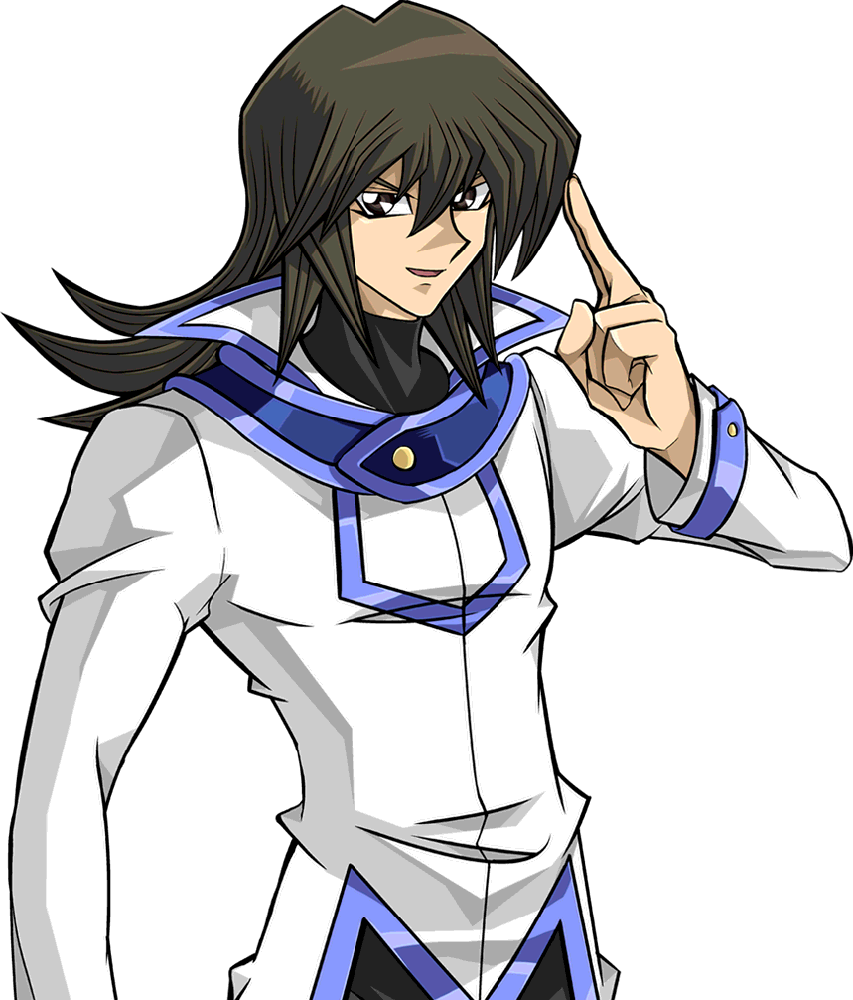
Asuka (GX): Excusez-moi les amis, je dois prendre cet appel.
Après avoir parcouru une courte distance, elle a répondu à son téléphone.
Asuka (GX): Hé Nii-san, quoi de neuf ? ... Oui, Sho est là. Il a l'air d'aller bien. Pourquoi tu demandes ça ? ...
Son sourire s'est rapidement effacé aux prochains mots de son frère.
Asuka (GX): Eh bien, il l'a mentionné plus tôt. Mais il a dit que Ryo allait bien.
Fubuki a alors dit quelque chose qui a fait sursauter Asuka qui a couvert sa bouche avec sa main libre.
Asuka (GX): Il... il n'a rien dit à ce sujet ! Est-ce qu'il va mieux ?
Elle a demandé, effrayée par ce qu'elle pourrait entendre. Son frère a hésité avant de reprendre la parole. Ce que Fubuki lui a dit alors lui a presque fait lâcher son téléphone.
Asuka (GX): Non...
Ses yeux se sont agrandis et ont commencé à se remplir de larmes. Elle n'arrivait pas à croire ce qu'elle venait d'entendre. Elle ne voulait pas le croire. Asuka s'est
lentement tournée vers son ami, qui conversait avec Serena.
Asuka (GX):Sho... Pourquoi ne nous l'as-tu pas dit ?
 , en particulier
les étudiants d'Obelisk Blue, ont applaudi bruyamment la décision de
Serena
, en particulier
les étudiants d'Obelisk Blue, ont applaudi bruyamment la décision de
Serena .
Cependant, ceux qui la connaissaient vraiment sont restés bouche bée. Ils avaient tous l'impression qu'elle détestait l'Obelisk Blue parce que le dortoir partageait le
même nom que
.
Cependant, ceux qui la connaissaient vraiment sont restés bouche bée. Ils avaient tous l'impression qu'elle détestait l'Obelisk Blue parce que le dortoir partageait le
même nom que  d'Akaba Leo
d'Akaba Leo . Elle-même
avait dit qu'elle ne mettrait jamais les pieds dans cet endroit. Ils se demandaient tous ce qui avait pu la faire changer d'avis.
. Elle-même
avait dit qu'elle ne mettrait jamais les pieds dans cet endroit. Ils se demandaient tous ce qui avait pu la faire changer d'avis.


.png)